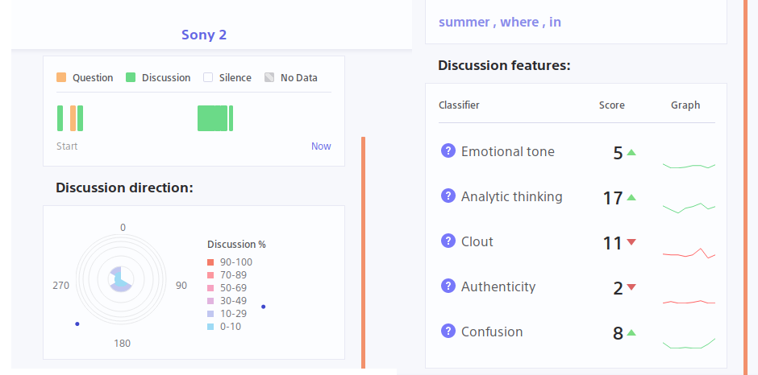
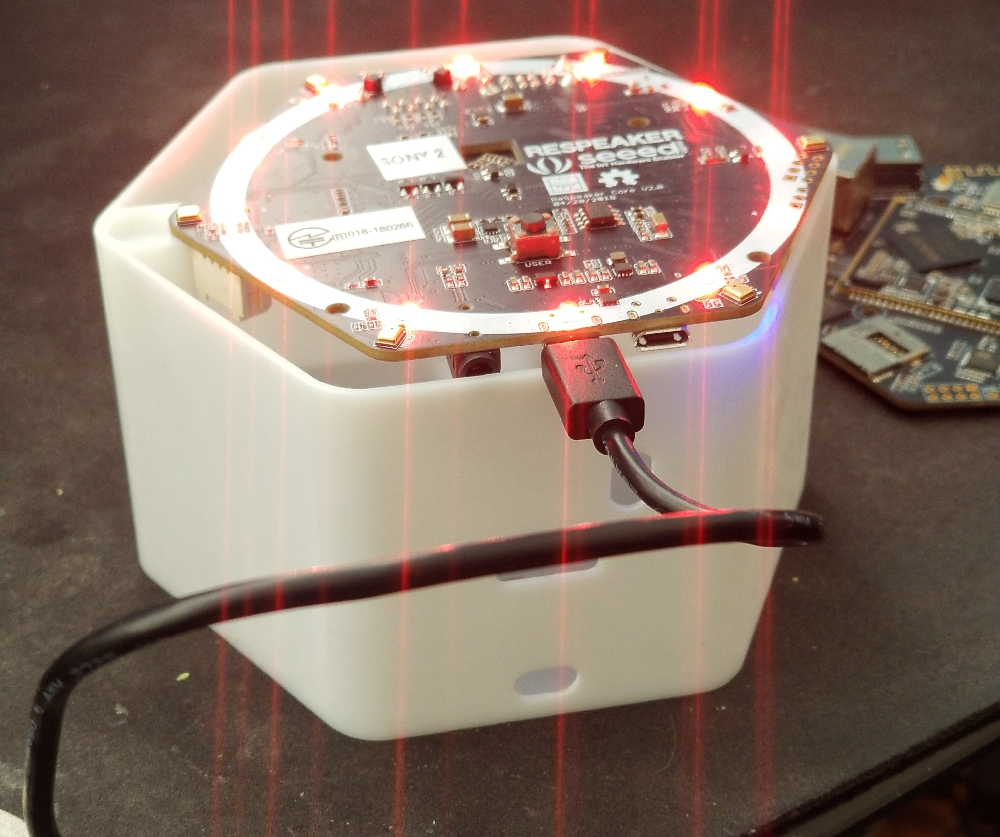
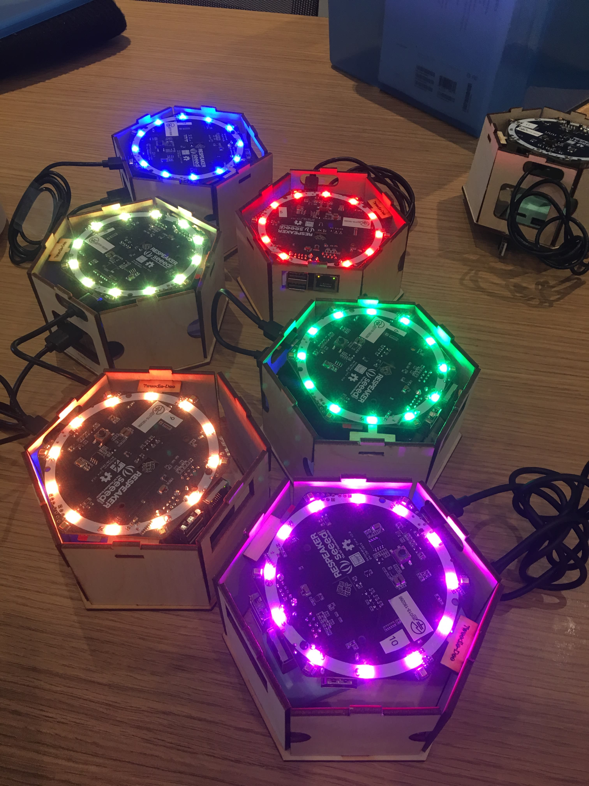

Blinc
tiilt-blinc.comDashboard

Pod

Respeaker

This team works on developing data-capture devices that provide educators with real-time multimodal learning analytics. We use ReSpeaker Core v2.0 microphone arrays to show educators what keywords have been said, a discussion timeline, direction of speech, and emotional tone indicators. We are also working to incorporate body pose estimation into our analyses. We have tested our devices in multiple classrooms and are continuing development and testing in the coming months.